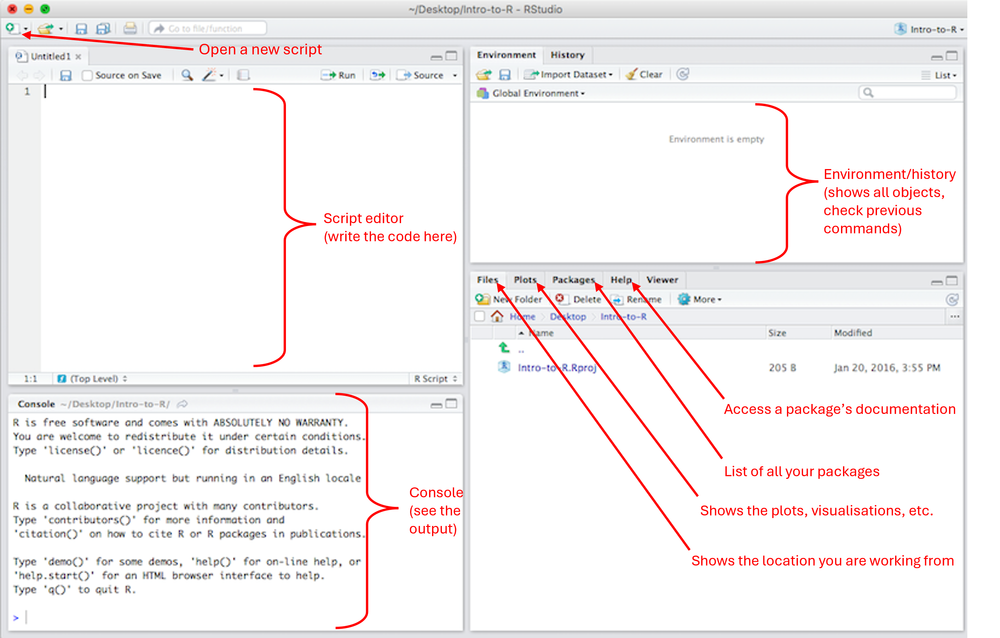
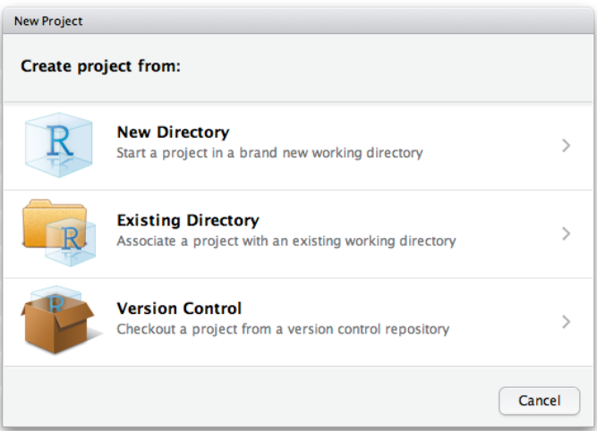

# this is a comment
2 + 3
# 5-3
8 / 7 # the result is 1.142857A brief R guide for surviving ENVX1002
This is your R guide to survive ENVX1002. This document was designed to help you with (some of) the most common R-related issues faced by past students. The goal was to make this document as succinct as possible to avoid overloading you with a ton of code and nonessential details/explanations. Pay close attention to the notes and tips that will help you write nicer code. The topics covered are available in the “On this page” section on the right side of the screen.
Changelog – last updated on 11 March 2025
Version 1.1 (11 March 2025)
- Moved the R guide to the ENVX1002 handbook (this site)
- Made sure that Geoff is prominently displayed as the author
- Removed the manual TOC since moving the file to the handbook will automatically generate a TOC
- Added a changelog (this section) to document changes to the R guide
Version 1.0 (25 January 2025)
- Initial release of the R guide
Note: This document will be updated throughout the semester as needed. Check back for the latest version.
1. What is R?
R is a statistical programming language that can be used to store, manipulate, visualize and analyse data. It contains a number of predefined functions (i.e. tools), but you can also program your own.
R is open source which means that you can examine and modify the raw software code if needed. A worldwide collective of scientists, programmers and statisticians are working on improving and extending the capabilities of R.
Of immediate value to you is that it is free so for the rest of your career you can keep using R without burdening future employers with software licence fees.
Note: When we talk about R, we may refer to the programming language or the software.
2. Running R in Rstudio
R is an open-source programming language. RStudio is a Graphical User Interface (GUI) for R. What does this mean? Well, imagine a car. The engine is what makes the car move. Without the engine, the car does not do anything. However, it would be quite challenging to use the engine without all the other parts of the car. The different parts of the car enables you to use the engine in a simplified and comfortable manner. Here, R is our engine and Rstudio is the car around the engine.
Always install R first, and then R studio. You can download R and R studio from: https://posit.co/download/rstudio-desktop/

3. Writing code
You can communicate with R (the software) by writing lines of code in the R language. This code must follow certain rules and respect a predefined syntax otherwise R will not be able to execute what you are trying to do.
In this unit, most of the code will be written using a basic syntax, called ‘Base R’. We will also write some code following the ‘Tidyverse’ syntax, a slightly more elaborated and recent syntax.
4. Script
You can enter a line of code directly in the Console, but this code will get lost. Writing the code in a script is the best way to save your work. It is then easy to re-open it, and modify it anytime you need to (in the top left corner, File > Open File..). You can use a basic R script (the equivalent of a simple text file or note pad) or you can use a much nicer script: a Quarto Document.
In a Quarto document, you will find sections dedicated to writing code (a code chunk) and you can write text in between the code chunks.
You can then render your Quarto document to turn it into a .html or .pdf (which is not the case with a regular R script). You can create a new R script or Quarto document by pressing the “New File” button (top left corner above the Script Editor window).
Tip: the shortcut to insert a new code chunk is Ctrl+Alt+I (Windows) or Cmd+Option+I (Mac)
Tip: it is really important to write some comments in your code to keep track of what you do.
In a basic R script, you can use a # to comment out a line of code or write a comment for yourself. Any line of code starting by a # will be automatically considered as irrelevant by the software.
Note: to run a line of code from a script, simply highlight the line of code and press ctrl+enter (or command+return).
Avoid running the whole script by pressing “Run”. Similarly, avoid running a whole chunk code if you are building your code or trying to debug.
Tip: to run a single line of code, simply place the cursor on the line of code, click only once and run it (ctrl+enter or command+return).
You can select a single word in the code by clicking twice on it, then run it (that is very convenient to check what an object is).
You can select an entire line of code by clicking three times.
5. R projects
RStudio projects make it straightforward to divide your work into multiple contexts, each with their own working directory, workspace, history, and source documents. Create a new project for each new Practical to avoid working directory issues.
To create a new project in RStudio, use the Create Project command (available on the Projects menu and on the global toolbar):

We can open a project by:
Using the Open Project command (available from both the Projects menu and the Projects toolbar) to browse for and select an existing project file (e.g. MyProject.Rproj).
Selecting a project from the list of most recently opened projects (also available from both the Projects menu and toolbar).
Double-clicking on the project file within the system shell.
6. Defining objects
R can do everything a calculator does… and much more! The power of R lies in its ability to define and store “objects”. An object is simply a storage space that we can create. We can name it whatever we want and this object can contain pretty much anything we want (e.g. a value, a word, a spreadsheet, a list of things, etc.).
We need to use the assignment operator ” <- “ to define an object.
my_object <- 2 # defining the object named "my_object" and storing the value "2" in it.
a <- 5 + 3
b <- "hello world!"After an object has been defined, we can verify what it contains by calling it.
my_object
a
bWe can update and overwrite an object.
a <- 2 * a
b <- "update: hello world!!"
a
bNote: every time we create or update an object, it can be seen in the Environment window.
Tip: R is case-sensitive, so my_object is totally different from my_Object (and x is different from X). So be careful when naming your objects.
7. Using functions
A function is a block of code that performs a specific task by taking in data, processing it, and returning a result. A function is a tool that will do only one specific task. A function only runs when it is called (i.e. by running the line of code calling this function).
In a script, a function can be identified by the presence of parentheses. Inside the parentheses of the function, we will supply the data on which we want to perform the task, and a number of arguments. Arguments are simply some settings or parameters we want to apply to a function.
Here are some examples of basic functions in R:
# the "combine" function (Combines Values into a Vector or List)
my_object <- c(3, 1, 7, 12, 11.5)
my_object# the mean function
mean(c(3, 1, 7, 12, 11.5))
# or apply the function directly on my_object
mean(my_object)# plot function
plot(my_object)Note: even after using R for 10+ years, you will still come across new functions very frequently. Most of the time we have no idea what a function does, or what argument it needs, or which package it comes from… and that’s ok! Each function (or package) comes with a documentation to help us using it. The code to access the documentation is simply a “?” followed by the empty function (i.e. nothing within it’s parentheses).
# access the documentation for the hist function
?hist()
# access the documentation for the median function
?median()8. Packages
A function is a tool that will do only one specific task. R comes loaded with a lot of functions directly available for us to use, but we often need to use some functions that are are not available in the basic R installation.
We achieve this by downloading a package. A package is simply a collection of functions designed to work on a specific topic. First we need to download a package and install it in our computer using install.packages(). Then we need to extract the functions from the package to be able to use them, using library(). We only need to install the package once, but we need to extract the functions every time we start a new R session.
This is a frequent source of mistake!
Still not clear what a package is?
Let’s imagine we are going camping. To survive this camping trip we will need a few tools/pieces of gear to make a fire (axe, matches, etc.), to prepare the food (knife, cooking pot, etc.) and to sleep (tent, sleeping bag, etc). In order to have access to all these tools every time we go camping, we first need to put all these things into a box/bag in the car’s trunk. Upon arrival at the camping site, we can not use any of these tools until we take to box out of the car and open it to take something from it. In this analogy, loading the car with a box full of tools/gear is like installing a package (you only need to do it once), and taking the box of the car to open it on the camping site is like loading the package (i.e. opening the box to release the tools).
# download and install a package on the computer (run only once!)
install.packages("dplyr")
# load the package (run in every session)
library(dplyr)
# load the package
require() # an alternative to library()The “Packages” window (bottom right) shows the list of all the packages installed on the computer, and this list keeps growing every time we download a new package. All these packages will remain on the computer unless we decide to remove R & Rstudio and re-install it from scratch.
Any package with the tick sign (check mark) on its left is a package which is already loaded in the current R session. Some packages get automatically loaded when we start a new R session, but most of them will need to be loaded manually using library().
R, R studio and packages all need to get updated occasionally.
# update a package
update.packages(c("dplyr", "ggplot2"))Note: Packages are often mentioned within “{ }”. For example, {readxl} would read as “the readxl package”.
Note: Two functions coming from two different packages might have the same name. As a result, R struggles to pick the correct function, which may lead to Error messages or incorrect results. This can be avoided by specifying which package we want to use. For example, “dplyr::select()”, read as “the function select() from the dplyr package”.
9. Working directory
Conducting data analysis will often start with reading a spreadsheet (or text file) in R and will end by writing/saving some documents (pdf, html, image, etc.). Unless we indicate the correct path to this file, R will search for a file (or save file) in a default location on our computer. This default location is called the working directory. We can check what is our working directory and change it manually.
# check the working directory.
getwd()
# set the working directory.
setwd() # provide a path to the function (e.g. "C:/Desktop/R_documents)By default, your script will be saved in the current working directory.
Tip: if you open an existing script (or R project) by double-clicking on it, your working directory will be automatically set to this location. So to avoid any working directory issue when starting a new script, simply save your script, close R Studio, navigate to your new script and re-open it by double clicking on it.
10. Reading a spreadsheet
There is a number of functions available to read a spreadsheet in R. We may need to open .txt, .xlsx, .xls. or .csv files.
Common errors: the path provided does not lead to the location where the spreadsheet is, the file we are trying to read is not located in the working directory, or the name of the file is not provided correctly (R is case sensitive, remember? ).
Tip: check what the working directory is, and place the spreadsheet in that location. Make sure the name of the file is identical to the one provided in the code.
# install.packages(readxl)
library(readxl)
my_data<-read_excel("data/ENVX1002_Data.xlsx", sheet = "Sheet3")11. Data Frames
A data frame is a 2 dimensional object, made of columns and rows. It is basically the R equivalent to a spreadsheet. Data frames can have different types of data inside it (i.e., character, numeric or logical).
Here are some useful functions to work on data frames:
#my_data<-read_excel("data/ENVX1002_Data.xlsx", sheet = "Sheet3")
is.data.frame(my_data) # check if the object is a data frame
head() # print the first 6 rows of the data frame
tail() # print the last 6 rows of the data frame
str() # print information about the variables (i.e. columns)
summary() # print baisc summary about the variables
nrow() # the number of rows
ncol() # the number of columns
length() # the number of columns
dim() # the number of rows and columns
colnames() # the names of the variables (i.e. columns)
names() # the names of the variables (i.e. columns) Tip: str() is a very useful function to get to know your data. It is a good habit to make sure you run str(your_data_frame) directly after you imported your spreadsheet.
12. Built-in data sets
R comes with many built-in data sets, ready for you to use. They are perfect for practicing your analytical skills. Some of the most used data sets include: iris, mtcars, PlantGrowth, etc.
data() # to see the list of of pre-loaded data sets.
data(mtcars) # Loading mtcars
head(mtcars) # Print the first 6 rows of mtcars
?mtcars # access the documentation about this data set. 13. Subsetting a data frame and selecting specific cases
Note: this is one of the most common source of error in ENVX. Make sure you master this section!
When conducting analyses, we will need to subset the data frame (i.e. isolate part of it) or select specific cases. Our data set is made of variables containing many observations (in R, this translate to “a dataframe is made of columns and rows” ).
We will often need to take one variable at the time. We can do this by using the “$” between the name of our data frame and the name of the variable, such as my_dataframe$variable_name. Here are some examples using the “iris” built-in dataset:
data(iris) # load the iris dataset
df <- iris # save the iris dataset in an object called 'df' (for dataframe)
colnames(df) # check the names of the variables
df$Sepal.Width # print the Sepal.Width variable
plot(df$Sepal.Width) # plot the Sepal.Width variable
# OR, save it into its own object
my_variable <- df$Sepal.Width
plot(my_variable)We can do more than just selecting a single variable! We can include or exclude pretty much anything we want from a data frame by accessing the rows and columns.
We can achieve this by using the square brackets with a coma in the middle. Anything we write before the coma will control the rows, while anything we write after the coma will control the columns, such as:
my_dataframe[rows, columns]
Let’s look at some simple examples using the mtcar built-in data set.
data(mtcars) # load the mtcars dataset
df <- mtcars # save the mtcars dataset in an object called 'df' (for dataframe)
# including/excluding rows
df[5,]# the 5th row only (across all columns)
df[-5,]# all the rows but the 5th one (across all variables)
df[3:5,]# the rows 3 to 5 (across all columns)
df[c(3,5,7),]# the rows 3, 5 and 7 using the c function (across all columns)
# including/excluding columns
df[,3]# the 3rd column only (for all rows)
df[,-3]# exclude the 3rd column (for all rows)
df[,4:7]# the columns 4th to 7th (for all rows)
df[,c(1,3,7)]# the columns 1,3,and 7 (for all rows)
# including/excluding columns AND rows
df[3:4,4:7]# the rows 3 and 4 for the columns 4th to 7th We can also make a selection based on a given value within one (or two) variable(s).
# filter based on one variable's values
df[df$hp >100,] # only the rows with a hp > 100 (across all variables)
# filter based on two variables
df[which(df$hp >100 & df$disp > 400),] # only the rows with a hp > 100 and mpg < 20Note: “( )” are parentheses, “[ ]” are square brackets, “{ }” are curly rackets (or braces).
14. Data type
In R, an object can store pretty much anything, but very often we need to know what type of data we are working with. There are 5 basic data types in R:
character:
"a","day"numeric: 6, 3.14
integer:
2 or 2L(theLtells R to store this as an integer)logical:
TRUE,FALSEcomplex:
1+3i(complex numbers with real and imaginary parts)
There is a number of functions available to check what type of data we are working with:
class() # what kind of object is it?
typeof() # what is the object’s data type?
length() # how long is the object?
is.character() # returns TRUE or FALSE
is.numeric()
is.integer()
is.logical()
as.character() # convert to character
as.numeric()15. Data structure
When we define an object by storing something inside it, we automatically assign a data structure to our object. The most common structures include:
vector: the most common and basic data structure in R. There are two types: atomic vectors and lists. A vector is a collection of elements that are most commonly of mode character, logical, integer or numeric.
# create a empty vector to store 4 elements of type character vector("character", length=4) character(5) # the same thing, but using the constructor directly numeric(5) # a numeric vector with 5 elements logical(5) # a logical vector with 5 elements # create vectors by directly specifying their content. # R will then guess the appropriate mode of storage for the vector. x <- c(1, 2, 3) x <- c(1L, 2L, 3L) x <- c(TRUE, TRUE, FALSE, FALSE) x <- c("John", "Paul", "George", "Ringo") # examine a vector is.vector() # check if the object is a vector typeof() length() class() str() # count elements in a vector my_vector<-c(2,4,6,8,10,11,13,15) length(my_vector[my_vector>10])matrix: a two dimensional data set, with rows and columns.
# Create a matrix my_matrix <- matrix(c(1, 2, 3, 4, 5, 6), nrow = 3, ncol = 2) # access items in the matrix my_matrix[, ] # [rows,columns]data frame: a two dimensional data set, with rows and columns. Data frames can have different types of data inside it.
# Create a data frame df <- data.frame ( Variable1 = c("Monday", "Tuesday", "Wednesday"), Variable2 = c(10, 15, 20), Variable3 = c(6, 3, 5) ) summary(df) #summarise the df dim(df) nrow() ncol()factors: factors are used to categorize data. The “categories” inside a factor are called “levels” (i.e. the labels used to identify groups/categories).
# Create a factor my_factors <- factor(c("high", "low", "medium")) levels() length() my_factor[2] is.factor() as.factor() # ordering the factors my_factors_ordered <- ordered(my_factors, levels = c("low", "medium", "high"))
Note: when testing the effect of a treatment (e.g. a drug) or any other categorical data (e.g. farm, location, etc.), we need to make sure to specify that the variable should be treated as categorical. This is how we do it:
df$Variable1 <- as.factor(df$Variable1)
# take the variable 1 from df,
# convert it as factor and
# feed it back into the column "Variable1" of df.16. Dealing with missing values (NA)
It can happen that we have some missing data in a vector. Missing data are indicated as NA in R.
# inspect if there are NAs
is.na()
anyNA()
sum(is.na())
# many functions have a special argument to ignore NAs
x<- c(4,6,8, NA)
mean(x, na.rm=TRUE)Note: “NaN” means “Not a Number”. It’s an undefined value. Inf is infinity. You can have either positive or negative infinity.
1/0 # Inf
0/0 # NaN17. A brief introduction to tidyverse
Tidyverse is a collection of packages designed to work well together. Each package covers a specific topic. For example:
{dplyr} is a package for data manipulation (i.e. for working on the data frame).
{ggplot2} is a package for data visualization (i.e., making all sort of plots and figures)
Some of the functions coming from the tidyverse packages are quite similar to some functions from base R, while other enable you to do some sophisticated things with only 1 line of code (instead of 5 or 10 in base R).
In the tidyverse, we use this strange operator, %>%, called the pipe. The pipe is used to connect different actions, creating a chain which will be processed as one single flow, as opposed to several lines of code processed one by one. For example:
mydf_new <- mtcars %>% mutate(New_variable2 = Variable_2 +10 ) %>% filter(New_variables2 >10)This line of code would translate into: take the object df, then use the function “mutate” to create a new variable (i.e. column) named New_Variable2 which contains the values from Variable_2 +10, then filter to keep only the values that are greater than 10, and store all of this inside an object named mydf_new.
As you can see, we can do two actions within a single line of code (create a new variable and filter the data) using the pipe sign.
Tip: the short cut for the pipe is Ctrl+Shift+M (Windows) or Cmd+Shift+M (Mac).
Examples of functions from {dplyr}:
utils::data(starwars) # load the built-in data set
dplyr::glimpse(starwars) # take a look at the structure of the data
# filter the data
starwars %>% dplyr::filter(skin_color == "blue")
# filter to keep only the rows with "blue" in skin_color
starwars %>% dplyr::filter(skin_color == "blue", eye_color == "brown") # filter to keep only the rows with "blue" skin_color and "brown" eye_color
# arrange (i.e. order) the rows
starwars %>% dplyr::arrange(height) # order the rows using the mass values
# slice the rows to select specific rows
starwars %>% dplyr::slice(3:6) # keep only the rows 3 to 6
# select columns
starwars %>% dplyr::select(height, skin_color, eye_color) # keep only air_color, skin_color, eye_color
# create new columns
starwars %>% dplyr::mutate(height_doubled = height * 2)
# create more more than one column
starwars %>%
dplyr::mutate(height_m = height / 100,
BMI = mass / (height_m^2)
)
# collapse a data frame to a single row
starwars %>% dplyr::summarise(height = mean(height, na.rm = TRUE)) # calculate the mean of height over all rowsWe can then combine different functions and use them within a single chain. For example:
starwars_modified <- starwars %>%
dplyr::group_by(species, sex) %>%
dplyr::select(height, mass) %>%
dplyr::summarise(
height = mean(height, na.rm = TRUE),
mass = mean(mass, na.rm = TRUE)
)
# The code above does to the following steps:
#1) take the starwars data frame
#2) group by species and sex, which correspond to "process everything one species at a time, and one sex at a time".
#3) keep only the height and the mass
#4) summarize the height (by calculating the mean, and remove the NAs) and the mass (again, by calculating the mean)18. Data visualization with ggplot2
To make a plot, you will need to pass some data to the ggplot() function, which stores the data to be used later by other parts of the plotting system.
ggplot(data = mpg)The mapping of a plot is a set of instructions on how parts of the data are mapped onto aesthetic attributes. In other words, we will define which variable will be used on the x axis, y, etc.
The mapping is made by using the aes() function.
ggplot(mpg, mapping = aes(x = cty, y = hwy))To customize the plot, we will use the layers. Consider that a “layer” is simply an extra layer of information which you apply to your plot. A layer affects anything, from the size of the data points, to the position of an axis, etc. Layers take the mapped data and display it in something humans can understand as a representation of the data.
library(ggplot2)
data(mpg)
ggplot2::ggplot(mpg, aes(cty, hwy)) + # to create a scatterplot
geom_point(size = 3, shape = 6) +
# to fit and overlay a loess trendline
geom_smooth(formula = y ~ x, method = "lm") +
theme_classic()This plot was made using ggplot2. In base R, the code to produce the same figure would have been:
data(mpg)
# first define the model
my_model <- lm(hwy ~ cty, data = mpg)
# get teh prediction and the 95% confidence interval
conf_interval <- predict(my_model, interval = "confidence", level = 0.95)
# plot the data
plot(hwy ~ cty,
data = mpg,
pch = 6, # the shape of the points
ylim = c(10, 50)
) # the ticks of the y axis
# add the regression line
abline(my_model, col = "blue", lwd = 3)
lines(mpg$cty, conf_interval[, 2],
col = "gray",
lty = 3
)
lines(mpg$cty, conf_interval[, 3],
col = "gray",
lty = 3
)This is a good demonstration of why you should use {ggplot2} to make figures (4 lines of code using {ggplot2} versus 7+ lines of code in {base} R).
19. Debugging
Here is something important to keep in mind. Writing code leads to making mistakes. Forgetting a sign, errors in the syntax, providing the wrong path, typing a semicolon (;) instead of a colon (:), issues with a package… There is a million of ways in which we can make a mistake while writing code. In fact, your code will rarely (never?) run smoothly from the first try… and that’s ok!
The heart of coding comes from … DEBUGGING! Debugging means that we double check each line of code to find and fix issues until the code runs smoothly. It sometimes takes 20min (or more) to debug just a few lines of code.
Here are some tips to help you debugging.
1) look at the Console. This is where you can see if the code runs smoothly (or not). The sign > means that R is ready to accept new code, which means that the previous line of code has been executed without issue.
2) A “Warning” message does not mean that the code did not run. It simply provids you with some information about what the functions did. However, an “Error” message means that the code crashed (time to start debugging).
3) Run each line one by one to identify which one makes the code crash.
4) Check what the objects contain (remember that you can simply double click on the object and run it quickly to check what is in it).
5) Access the documentation of a function using the “?” before an empty function (e.g. ?median() ). There, you will find explanations about the arguments used in the function, and some examples.
6) Pay attention to the words used in the Error message. “Class” may indicate some issue with one of the object (you may be trying to feed a factor into a function that takes numerical data only); “Path” means that you may have provided the wrong path to your data frame, etc.
7) There is a vast community of R users online. If you can not understand the Error message , simply copy/paste it in Google. You are certainly not the first person to have this error and it is likely that this issue has already been discussed (and hopefully solved) in a forum. There is a number of forums and blogs for R users that will likely have an answer to your issue. Here are a few of them: R-bloggers, StackOverflow, RStudio Community, Github R Topics, CrossValidated, etc.